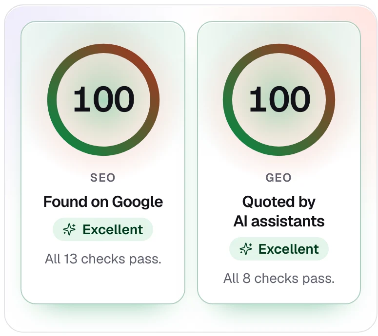
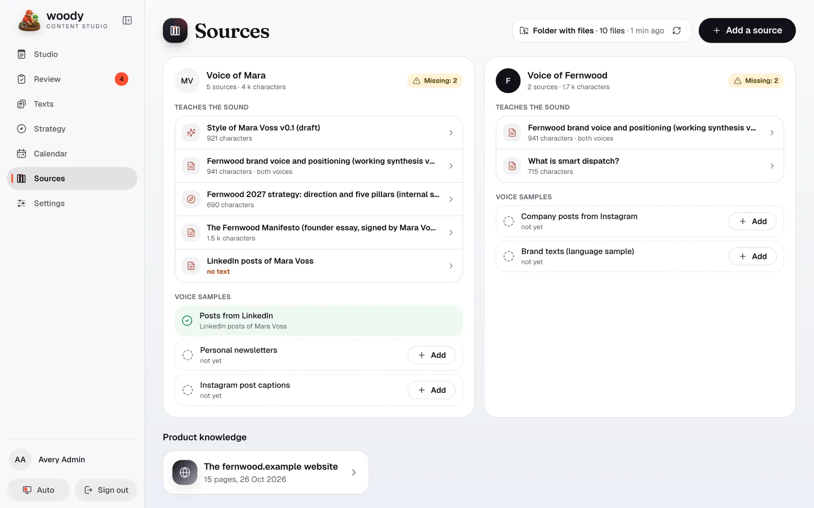
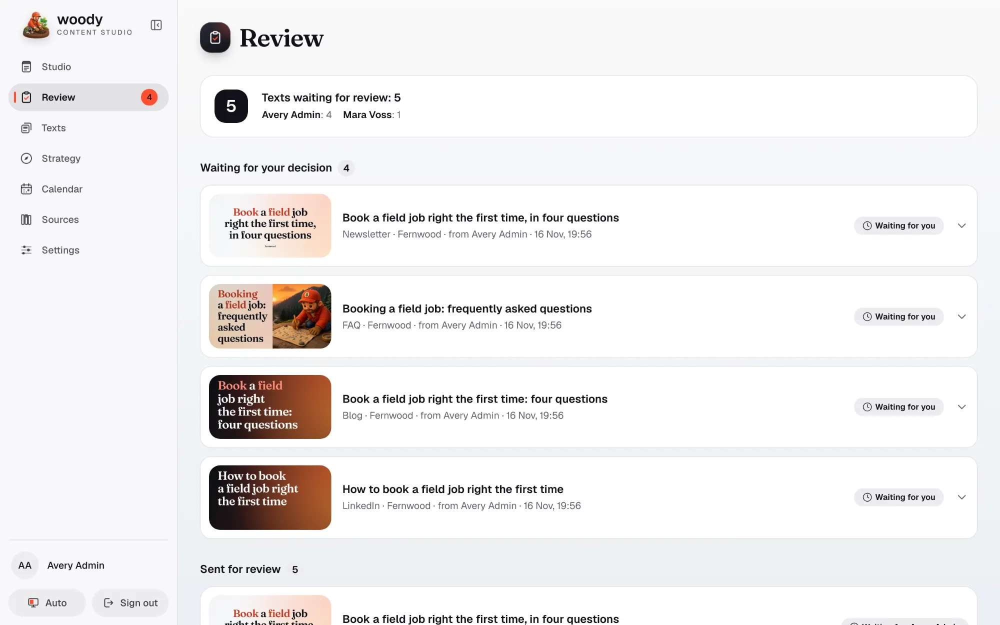
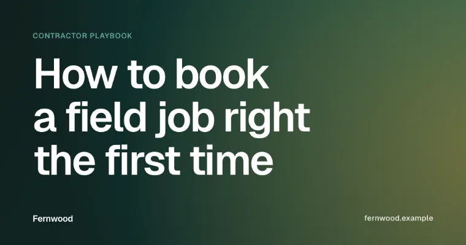

Content studio
Writes from your sources. Waits for a person's yes.
Type one sentence, like “a LinkedIn post about how to build a vendor shortlist”. Woody writes it from your documents and scores it for Google and for AI answers. Then it waits for the person who approves.
Not on sale yet. Runs on your own server.

One request, start to finish
Follow one request from a sentence to a yes.
This is the real product, running a made up company called Fernwood. Scroll.
-
One field, plain words: “A LinkedIn post about how to build a vendor shortlist, in the voice of Mara.” Attach a file or a link if the answer is in one.

-
Before it writes, it says what it understood: the category (Contractor Playbook) and the kind of text (a how-to). Wrong guess? One click on Change.
-
A source counts as read only when Woody holds its text. The others are marked Missing. This request uses 11 sources.

-
13 checks for Google, 8 for AI assistants. A text that misses is corrected up to two times before you open it. This sample FAQ passes both.

-
On the Review page every text carries the name of the person who has to approve it. The model approves nothing. Every edit adds a version, none is deleted.

-
Covers come in your colours and fonts. A slider sets the tone from formal to casual. The people on them come from 27 generated photos, or up to six of your own person.

-
The Strategy page keeps the content book: 48 pages in chapters, each with a status from No text to Published. The Studio offers the next idea from it.

The covers
Every text gets a cover. The faces are generated.
Woody draws each cover in your colours and fonts and adds a person when the topic fits. It picks from 27 generated photos, or from up to six photos of your own person.





Two shifts
By day Woody writes. By night a beaver works.
Write, check, approve.
Everything you just scrolled through, on your own server.
- Writes
- From your sources, in your voice, for seven formats: blog, FAQ, newsletter, LinkedIn, Facebook, Instagram and text in your app.
- Checks
- 13 search checks and 8 AI checks on every text, with up to two corrections before you see it.
- Approves
- A person you name decides on one version. History is never deleted.
- Yours
- Keys stay in the environment of the server. The database is copied every 23 hours. A license can stop writing, never reading.
While you sleep, the beaver works through your library.
A second character with a night shift. When nobody uses Woody, it audits, researches and prunes, then stacks the result into briefs for the forester.
- Gnaws
- Audits published texts: outdated facts, claims with no source, keywords that compete, dead links. Fixes arrive as proposals.
- Fells
- Researches your sources and the sites you allow. Every fact carries a link, a date and a confidence.
- Trims
- Merges duplicate ideas and drops the weak ones with the reason. One click brings one back.
- Dam
- Stacks verified facts into briefs. In the morning the Studio offers the best brief first.
The beaver publishes nothing and never edits an original. You set the night window and a budget, and you approve everything in the morning.

Plain answers
What people ask first.
Does it write without an AI key?
No. Without a key you can browse and edit. You bring your own key, so the cost stays on your account. You set the monthly limit.
Which models does it use?
Claude first, Gemini second, both with your own key. This page was prepared from the documentation and from test runs with stand-ins, not from a live model.
Which languages does it write in?
English or Slovak, chosen from the language of your request. The interface is in English.
Does it publish for me?
No. An approved text goes to the calendar, and you export it or save it to Google Docs.
Who sees what I write?
The people you add to your team. Woody runs on your server, so your texts stay there.
Not on sale yet
One email, when Woody opens.
No newsletter and no follow-ups. I write once, on the day Woody opens. Write to me and I add you to the list.
The button opens your own email program with a message you can read and change. This page collects nothing and loads nothing from other sites.